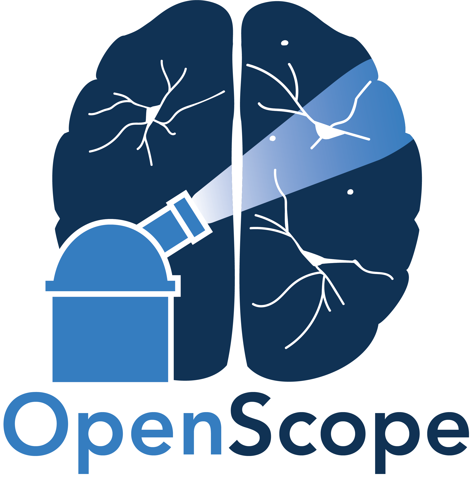

OpenScope Community Predictive Processing
Welcome to the OpenScope Community Predictive Processing repository! This project is part of the Allen Institute's initiative to foster collaboration and innovation in predictive processing research. The repository serves as a hub for community-driven contributions, documentation, and project tracking.
Scientific Context
This project is described in the paper Neural mechanisms of predictive processing: a collaborative community experiment through the OpenScope program. The paper explores how predictive processing mechanisms in the brain can be studied using community-driven experiments, leveraging tools like in-vivo two-photon imaging and electrophysiological recordings.
Predictive processing theorizes that the brain continuously predicts sensory inputs, refining neuronal responses by minimizing prediction errors.
The collaborative experiment described in the arXiv paper proposes testing mechanisms behind predictive processing using temporal, motor, and omission mismatch stimuli in mice and primates. The resulting datasets, shared via the OpenScope program, and from collaborating laboratories, aims to foster community analysis and iterative refinement of predictive processing models.
Experimental Plan
The OpenScope Community Predictive Processing project aims to investigate the neural mechanisms of predictive processing through a series of carefully designed experiments. These experiments focus on:
- Temporal Mismatch Stimuli: Testing how neurons respond to unexpected timing changes in sensory inputs.
- Motor Mismatch Stimuli: Exploring the neural responses to unexpected motor actions or outcomes.
- Omission Mismatch Stimuli: Studying the effects of omitted sensory inputs on neural activity.
Methodology
- Subjects: Experiments are conducted on mice and primates to compare mechanisms across species.
- Techniques: In-vivo two-photon imaging and electrophysiological recordings are used to capture neural activity.
- Data Sharing: All datasets are collected and shared via the OpenScope program to enable community analysis and model validation.
Goals
The primary goals of these experiments are:
- To identify shared and distinct mechanisms of predictive processing across species.
- To validate computational models of predictive processing.
- To foster community-driven analysis and iterative refinement of predictive processing models.
For more details, refer to the arXiv paper.
About this Website
This website is includes: - Guidelines for contributing to the project. - Documentation for experimental stimuli and tools. - A centralized location for tracking project progress and team contributions.
How to Contribute
We welcome contributions from the community!
To contribute, review the How to Contribute guide.
Documentation
The repository includes the following key documents: - How to Contribute: Step-by-step guide for contributors. - Collaboration Policy: Guidelines for respectful and productive collaboration. - Project Tracking: Overview of ongoing projects and team members. - Stimuli Instructions: Documentation for experimental stimuli.
Thank you for being part of the OpenScope Community Predictive Processing project!